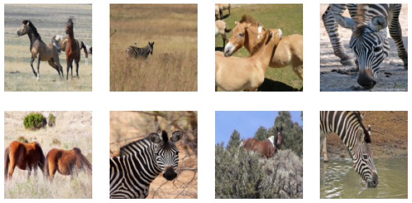
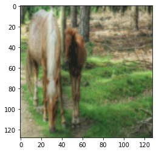
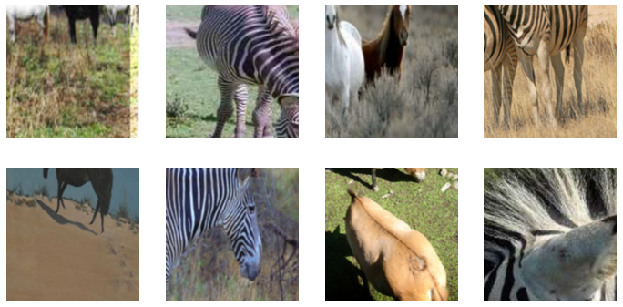
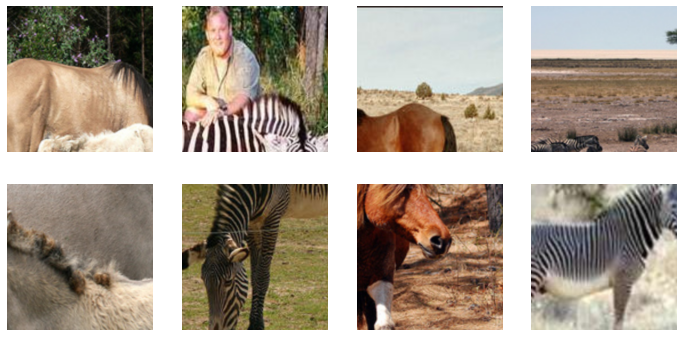
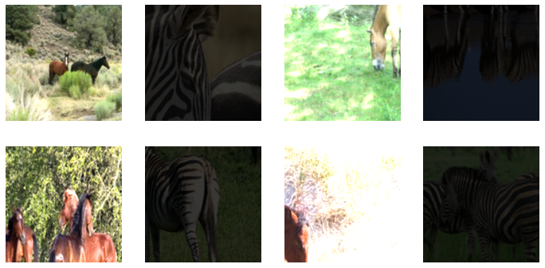
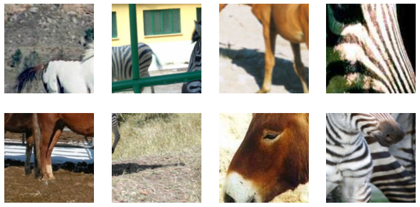
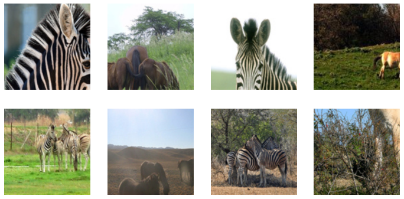

from nbdev.showdoc import *Unpaired data loading
Loading of the dataset into the fastai
DataLoaders class.
Example Dataset - Horse to Zebra conversion
Here, we are going to use the horse2zebra dataset provided by UC Berkeley. I have already downloaded it, You can download it at the URL https://people.eecs.berkeley.edu/~taesung_park/CycleGAN/datasets/horse2zebra.zip with the fastai untar_data function. Additionally, we can view the directory with Path.ls() (added by fastai).
horse2zebra = untar_data('https://people.eecs.berkeley.edu/~taesung_park/CycleGAN/datasets/horse2zebra.zip')folders = horse2zebra.ls().sorted()
print(folders)[Path('/home/tmabraham/.fastai/data/horse2zebra/testA'), Path('/home/tmabraham/.fastai/data/horse2zebra/testB'), Path('/home/tmabraham/.fastai/data/horse2zebra/trainA'), Path('/home/tmabraham/.fastai/data/horse2zebra/trainB')]We can see that we have four directories, a train and test directory for both domains.
Create DataLoaders object:
We can treat the image in Domain A as the input and the image in Domain B as the target. We want to be able to index the dataset for a fixed image in domain A but a random image in domain B, in order to avoid fixed pairs.
A brief summary of how fastai Datasets works: > “A Datasets creates a tuple from items (typically input,target) by applying to them each list of Transform (or Pipeline) in tfms.”
(from docs)
So for transforms we will have a list of list of transforms. Each list of transforms are used to obtain, process, and return the inputs (in this case Domain A) and the targets (Domain B) as a tuple.
Let’s first get our image paths:
trainA_path = folders[2]
trainB_path = folders[3]
testA_path = folders[0]
testB_path = folders[1]We can use get_image_files to get the image files from the directories:
filesA = get_image_files(trainA_path)
filesB = get_image_files(trainB_path)filesA(#1067) [Path('/home/tmabraham/.fastai/data/horse2zebra/trainA/n02381460_6873.jpg'),Path('/home/tmabraham/.fastai/data/horse2zebra/trainA/n02381460_6335.jpg'),Path('/home/tmabraham/.fastai/data/horse2zebra/trainA/n02381460_4123.jpg'),Path('/home/tmabraham/.fastai/data/horse2zebra/trainA/n02381460_4785.jpg'),Path('/home/tmabraham/.fastai/data/horse2zebra/trainA/n02381460_1798.jpg'),Path('/home/tmabraham/.fastai/data/horse2zebra/trainA/n02381460_691.jpg'),Path('/home/tmabraham/.fastai/data/horse2zebra/trainA/n02381460_2048.jpg'),Path('/home/tmabraham/.fastai/data/horse2zebra/trainA/n02381460_3329.jpg'),Path('/home/tmabraham/.fastai/data/horse2zebra/trainA/n02381460_835.jpg'),Path('/home/tmabraham/.fastai/data/horse2zebra/trainA/n02381460_993.jpg')...]Now, we can have a Transform that randomly selects an image in domain B for the current pair:
RandPair
RandPair (itemsB)
Returns a random image from domain B, resulting in a random pair of images from domain A and B.
test_ne(RandPair(filesB)(0),RandPair(filesB)(0))
test_eq(type(RandPair(filesB)(0)),type(Path('.')))Now let’s make our Datasets (assume no split for now). We load as a PILImage, convert to a Tensor, and resize:
size=128
dsets = Datasets(filesA, tfms=[[PILImage.create, ToTensor, Resize(size)],
[RandPair(filesB),PILImage.create, ToTensor, Resize(size)]],splits=None)Now we can create a DataLoader. Note that fastai allows for batch-level transforms that can be performed on an accelerator like a GPU. Let’s normalize the dataset:
batch_tfms = [IntToFloatTensor, Normalize.from_stats(mean=0.5, std=0.5)]
dls = dsets.dataloaders(bs=4, num_workers=2, after_batch=batch_tfms)We can also show the batch:
dls.show_batch()
xb,yb = dls.one_batch()
xb.shapetorch.Size([4, 3, 128, 128])plt.imshow(dls.after_batch.decode(xb)[0].cpu().permute(1,2,0).numpy())<matplotlib.image.AxesImage>
Some hacks for custom normalization for each of the inputs.
TensorImageB
TensorImageB (x, **kwargs)
A Tensor which support subclass pickling, and maintains metadata when casting or after methods
TensorImageA
TensorImageA (x, **kwargs)
A Tensor which support subclass pickling, and maintains metadata when casting or after methods
PILImageB
PILImageB ()
A RGB Pillow Image that can show itself and converts to TensorImage
PILImageA
PILImageA ()
A RGB Pillow Image that can show itself and converts to TensorImage
ToTensorB
ToTensorB (enc=None, dec=None, split_idx=None, order=None)
Convert item to TensorImageB
ToTensorA
ToTensorA (enc=None, dec=None, split_idx=None, order=None)
Convert item to TensorImageA
change_type_of_tfm
change_type_of_tfm (tfm, old_type, new_type)
dummy_data = np.ones((128,128,3))normalize_tfm = Normalize.from_stats(1,1)test_eq(normalize_tfm(TensorImage(dummy_data).cuda())[0],TensorImage(np.zeros((128,128,3))).cuda())new_normalize_tfm = change_type_of_tfm(normalize_tfm, TensorImage, TensorImageA)test_eq(new_normalize_tfm(TensorImageA(dummy_data).cuda())[0],TensorImageA(np.zeros((128,128,3))).cuda())Let’s add a data loading function to our library. Note that we don’t have a validation set (not necessary for CycleGAN training). Also note that we load the images with size load_size and take a random crop of the image with size crop_size (default of 256x256) to load into the model. We can also specify a subset of the data if we want (num_A and num_B). Finally, we have provided an optional argument to add your own transforms if you need.
get_dls
get_dls (pathA, pathB, num_A=None, num_B=None, load_size=512, crop_size=256, item_tfms=None, batch_tfms=None, bs=4, num_workers=2, normalize=False)
Given image files from two domains (pathA, pathB), create DataLoaders object. Loading and randomly cropped sizes of load_size and crop_size are set to defaults of 512 and 256. Batch size is specified by bs (default=4).
Quick tests:
load_size=512
crop_size=256
bs=4
dls = get_dls(trainA_path, trainB_path,load_size=load_size,crop_size=crop_size,bs=bs)test_eq(type(dls[0]),TfmdDL)
test_eq(len(dls[0]),int(len(trainA_path.ls())/bs))
test_eq(len(dls[1]),0)xb,yb = next(iter(dls[0]))
test_eq(xb.shape,yb.shape)
test_eq(xb.shape,torch.Size([bs, 3, crop_size, crop_size]))dls.show_batch()
num_A = 100
num_B = 150
dls = get_dls(trainA_path, trainB_path,num_A=num_A,num_B=num_B,load_size=load_size,crop_size=crop_size,bs=bs)test_eq(len(dls[0]),int(min(num_A,num_B)/bs))dls = get_dls(trainA_path, trainB_path,num_A=num_A,num_B=num_B,load_size=load_size,crop_size=crop_size,
batch_tfms=[*aug_transforms(size=224), Normalize.from_stats(mean=0.5, std=0.5)], bs=bs)dls.show_batch()
class MakeAll(Transform):
order=5
def __init__(self, value): self.value = value
def encodes(self, x:TensorImage): return TensorImage(torch.ones(*x.shape))*self.value
def decodes(self, x:TensorImage): return xdls = get_dls(trainA_path, trainB_path, load_size=load_size,crop_size=crop_size,item_tfms={TensorImageA: MakeAll(255.)}, bs=bs)
xb, yb = next(iter(dls[0]))
test_eq(xb, TensorImage(torch.ones(*xb.shape)).cuda())dls = get_dls(trainA_path, trainB_path, load_size=load_size,crop_size=crop_size,item_tfms={TensorImageB: MakeAll(255.)}, bs=bs)
xb, yb = next(iter(dls[0]))
test_eq(yb, TensorImage(torch.ones(*yb.shape)).cuda())dls = get_dls(trainA_path, trainB_path, load_size=load_size,crop_size=crop_size,item_tfms={TensorImageA: MakeAll(0.), TensorImageB: MakeAll(255.)}, bs=bs)
xb, yb = next(iter(dls[0]))
test_eq(xb, TensorImage(-1*torch.ones(*xb.shape)).cuda())
test_eq(yb, TensorImage(torch.ones(*yb.shape)).cuda())dls.show_batch()from albumentations import RandomContrastclass AlbumentationsTfm(Transform):
order=5
def __init__(self, aug): self.aug = aug
def encodes(self, img: TensorImage):
aug_img = self.aug(image=np.array(img))['image']
return type(img)(aug_img)dls = get_dls(trainA_path, trainB_path, load_size=load_size,crop_size=crop_size,item_tfms={TensorImageA: AlbumentationsTfm(aug=RandomContrast((0.75,0.99),p=1)), \
TensorImageB: AlbumentationsTfm(aug=RandomContrast((-0.75,-0.99),p=1))}, bs=bs)/home/tmabraham/anaconda3/envs/UPIT/lib/python3.9/site-packages/albumentations/augmentations/transforms.py:1826: FutureWarning: This class has been deprecated. Please use RandomBrightnessContrast
warnings.warn(dls.show_batch()
dls = get_dls(trainA_path, trainB_path, load_size=load_size,crop_size=crop_size,batch_tfms={TensorImageA: MakeAll(255.)}, bs=bs)
xb, yb = next(iter(dls[0]))
test_eq(xb, TensorImage(torch.ones(*xb.shape)))dls = get_dls(trainA_path, trainB_path, load_size=load_size,crop_size=crop_size,batch_tfms={TensorImageB: MakeAll(255.)}, bs=bs)
xb, yb = next(iter(dls[0]))
test_eq(yb, TensorImage(torch.ones(*yb.shape)))dls = get_dls(trainA_path, trainB_path, load_size=load_size,crop_size=crop_size,batch_tfms={TensorImageA: MakeAll(0.), TensorImageB: MakeAll(255.)}, bs=bs)
xb, yb = next(iter(dls[0]))
test_eq(xb, TensorImage(torch.zeros(*xb.shape)))
test_eq(yb, TensorImage(torch.ones(*yb.shape)))dls.show_batch()dls = get_dls(trainA_path, trainB_path,num_A=num_A,num_B=num_B,load_size=load_size,crop_size=crop_size, normalize=False, bs=bs)dummy_dl = DataLoader(Datasets([(TensorImageA(torch.ones(3,256,256)),TensorImageB(torch.ones(3,256,256))) for i in range(100)]))
dummy_dl.to('cuda')
xb,yb=dls.after_batch(next(iter(dummy_dl)))[0]
test_eq(TensorImage(xb),TensorImage(yb))dls = get_dls(trainA_path, trainB_path,num_A=num_A,num_B=num_B,load_size=load_size,crop_size=crop_size, normalize=True, bs=bs)dummy_dl = DataLoader(Datasets([(TensorImageA(torch.ones(3,256,256)),TensorImageB(torch.ones(3,256,256))) for i in range(100)]))
dummy_dl.to('cuda')
xb,yb=dls.after_batch(next(iter(dummy_dl)))[0]
test_ne(TensorImage(xb),TensorImage(yb))HuggingFace Datasets Loader
HuggingFace has a Datasets package that allows us to access the hundreds of datasets available on the Hub. This includes our Horse-to-Zebra dataset (over here). Here is another helper function specific for creating dataloaders for datasets available on the HuggingFace Hub:
get_dls_from_hf
get_dls_from_hf (dataset_name, fieldA='imageA', fieldB='imageB', num_A=None, num_B=None, load_size=512, crop_size=256, item_tfms=None, batch_tfms=None, bs=4, num_workers=2, normalize=False)
Given a name of a dataset available on the HuggingFace Hub, create DataLoaders object. Field names given in fieldA and fieldB arguments. Loading and randomly cropped sizes of load_size and crop_size are set to defaults of 512 and 256. Batch size is specified by bs (default=4).
create_image
create_image (x, image_type)
convert_func
convert_func (x)
Quick tests
load_size=512
crop_size=256
bs=4
dls = get_dls_from_hf('huggan/horse2zebra',load_size=load_size,crop_size=crop_size,bs=bs)Using custom data configuration huggan--horse2zebra-aligned-424fab4179d04c8e
Reusing dataset parquet (/home/tmabraham/.cache/huggingface/datasets/parquet/huggan--horse2zebra-aligned-424fab4179d04c8e/0.0.0/0b6d5799bb726b24ad7fc7be720c170d8e497f575d02d47537de9a5bac074901)test_eq(type(dls[0]),TfmdDL)xb,yb = next(iter(dls[0]))
test_eq(xb.shape,yb.shape)
test_eq(xb.shape,torch.Size([bs, 3, crop_size, crop_size]))dls.show_batch()
for i in dls[0]:
passdls = get_dls_from_hf('huggan/horse2zebra',fieldA='imageB',fieldB='imageA',load_size=load_size,crop_size=crop_size,bs=bs)Using custom data configuration huggan--horse2zebra-aligned-424fab4179d04c8e
Reusing dataset parquet (/home/tmabraham/.cache/huggingface/datasets/parquet/huggan--horse2zebra-aligned-424fab4179d04c8e/0.0.0/0b6d5799bb726b24ad7fc7be720c170d8e497f575d02d47537de9a5bac074901)dls.show_batch()